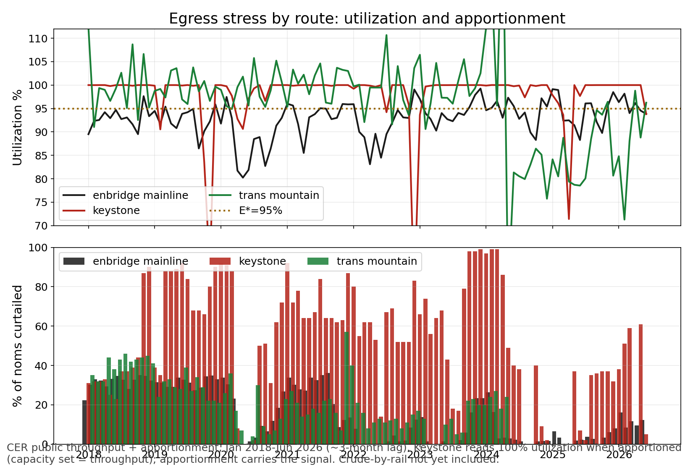

June 2026 data vintage · published 2026-09-22
Utilization is throughput over CER Available Capacity. Apportionment is the share of shipper nominations curtailed.
| Route | Capacity kb/d | Throughput kb/d | Utilization | Apportionment | Spare kb/d |
|---|---|---|---|---|---|
| Enbridge Mainline | 3,277.4 | 3,075.5 | 93.8% | 12.4% | 201.9 |
| Keystone | 588.5 | 552.1 | 93.8% | 5.0% | 36.4 |
| Trans Mountain | 899.4 | 865.6 | 96.2% | 0% | 33.8 |
| System | 4,765.3 | 4,493.1 | 94.3% | n/a | 272.2 |
Spare = capacity minus throughput. Apportionment = share of shipper nominations curtailed. Keystone 100% prints are a CER reporting artifact; apportionment carries the signal there.
Source: CER open data, throughput-capacity and apportionment CSVs, pulled 2026-09-22
Enbridge: throughput +23.2 kb/d (3,052.3 to 3,075.5). Apportionment 9.5% to 12.4%: still curtailing roughly one in eight shipper barrels while utilization sits at 93.8%.
Keystone: throughput -45.8 kb/d (597.9 to 552.1), capacity printed lower at 588.5. Apportionment collapsed 61% to 5%. A real easing, not reporting noise: the first print below 30% since April 2025.
Trans Mountain: throughput +61.3 kb/d (804.3 to 865.6), utilization 88.8% to 96.2%. Apportionment still 0. June 2026 is the tightest TMX month since expansion startup on a spare-capacity basis.
System: utilization 94.1% to 94.3%, spare 277.4 to 272.2 kb/d. Flat tight.

Apportionment has been 0 in every month since expansion startup, so the line has never publicly curtailed. But 33.8 kb/d of spare in June 2026 is the second-thinnest margin on record (only Apr 2026 was tighter at 10.4).
| Month | Capacity kb/d | Throughput kb/d | Utilization | Apportionment |
|---|---|---|---|---|
| 2024-05 | 746.0 | 411.1 | 55.1% | 0 |
| 2024-06 | 865.5 | 704.1 | 81.4% | 0 |
| 2024-12 | 899.4 | 681.3 | 75.8% | 0 |
| 2025-06 | 893.2 | 701.6 | 78.6% | 0 |
| 2025-12 | 899.4 | 725.6 | 80.7% | 0 |
| 2026-02 | 899.4 | 641.2 | 71.3% | 0 |
| 2026-04 | 861.7 | 851.3 | 98.8% | 0 |
| 2026-05 | 905.7 | 804.3 | 88.8% | 0 |
| 2026-06 | 899.4 | 865.6 | 96.2% | 0 |
Nameplate has sat near 893-906 kb/d for two years. Throughput broke out in 2026: 851.3 (Apr), 804.3 (May), 865.6 (Jun).
Source: CER open data, throughput-capacity and apportionment CSVs, pulled 2026-09-22
The system is tight and has been all year. Enbridge was still apportioning 12.4% in June, so the Mainline is already curtailing shippers even with spare on paper.
The new development is Keystone easing. Apportionment ran 32-61% for a full year (Sep 2025-May 2026), then printed 5% in June. If that holds, pressure comes off the Mainline and TMX. If it snaps back, the system is one outage away from a basis event.
TMX at 96% utilization with no spare margin is the thing to watch into fall. Winter maintenance season and the normal Q4 supply ramp will test all three pipes at once.
Capacity means CER Available Capacity, falling back to nameplate where available capacity is absent. Throughput and capacity come from CER route files; apportionment from CER's public apportionment file.
Enbridge apportionment is computed from accepted vs original nominations because CER leaves the percentage blank. Trans Mountain throughput sums Westridge, Sumas, and Burnaby.
Keystone caveat: CER may report available capacity equal to realized throughput while the pipe is constrained, printing exactly 100% utilization. Apportionment is the informative series there.
Crude-by-rail is excluded (separate CER file exists). Publication lag is approximately three months.
| Publisher | Dataset | URL | Published | Vintage / coverage | Retrieved |
|---|---|---|---|---|---|
| Canada Energy Regulator | Enbridge Mainline throughput and capacity (open data CSV) | https://www.cer-rec.gc.ca/open/energy/throughput-capacity/enbridge-mainline-throughput-and-capacity.csv | Monthly, ~3-month lag | Jan 2018-Jun 2026 | 2026-09-22 |
| Canada Energy Regulator | Keystone throughput and capacity (open data CSV) | https://www.cer-rec.gc.ca/open/energy/throughput-capacity/keystone-throughput-and-capacity.csv | Monthly, ~3-month lag | Jan 2018-Jun 2026 | 2026-09-22 |
| Canada Energy Regulator | Trans Mountain throughput and capacity (open data CSV) | https://www.cer-rec.gc.ca/open/energy/throughput-capacity/trans-mountain-throughput-and-capacity.csv | Monthly, ~3-month lag | Jan 2018-Jun 2026 | 2026-09-22 |
| Canada Energy Regulator | Pipeline apportionment (open data CSV) | https://www.cer-rec.gc.ca/open/energy/throughput-capacity/apportionment.csv | Monthly, ~3-month lag | Jan 2018-Jun 2026 | 2026-09-22 |
Every number in this report traces to a row above. Any chart or table missing its own source line is flagged in place; nothing ships with an unsourced number.
Physical supply/demand balance. Not a differential forecast and not validated as one. Licensed inputs stay in the private workspace and are never committed. Built 2026-09-22.